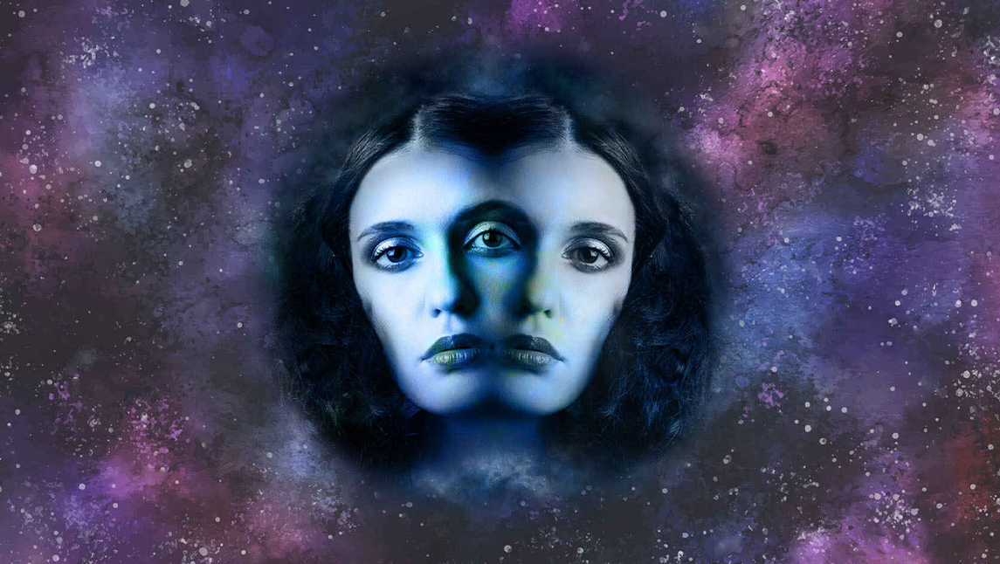

Sagitario nos dice que la Verdad es una sola, y Géminis nos muestra que ésta Verdad puede ser DICHA de diferentes maneras. Es por esto que Sagitario representa la UNIÓN de la multiplicidad de formas de entender, escribir y predicar -Géminis- esa misma Verdad.
Todos los grandes maestros de todos los tiempos pronunciaron en diferentes idiomas, palabras y formas -Géminis- una misma verdad -Sagitario-. Jesús te decía lo mismo que Buda, que te decía lo mismo que Lao Tse, que te decía lo mismo que Confucio, que te decía lo mismo que Mahoma. Te decían lo mismo de maneras diferentes.
Porque hay infinitas maneras de nombrar (Géminis) lo que es único, lo que es verdadero (Sagitario). No hay como el tiempo de Sagitario para aprender a nombrar de maneras diferentes las mismas cosas. Es como ponerle nombre al Cielo. Allí afuera, el Cielo es uno solo, pero hay diferentes palabras que podemos utilizar para nombrarlo.
Géminis nos enseña a abrirnos a todo lo diferente que hay dentro de lo que siempre es igual. Las palabras son puentes diversos que nos hacen cruzar hacia una misma dirección: aquella que nos señala hacia la libertad (Sagitario).
¿Cuál de todos los puentes te es más afín para poder encontrarte con la libertad? Miles de letras y alfabetos, libros, bibliotecas y predicas infinitas para nombrar lo mismo y poder llevarnos a todos juntos hacia la gran flecha ♐️ que apunta al Uno.
Géminis representa también a los hermanos porque todos los seres que habitamos esta tierra, a pesar de ser muy diversos y diferentes, -tal como los hermanos de sangre-, salimos de un mismo vientre, es decir, venimos de una misma madre. Y esa es la Gran Verdad Sagitariana que sacude las diferencias de pronombres y nos lleva galopando directamente a mirar a su querido y afín hermano, Piscis.
Nómbralo como quieras, le dice Sagitario a Géminis; usa los artículos y los verbos que sean necesarios, pero ayúdame a que la humanidad pueda entender la Gran Verdad de que todos, absolutamente todos, pertenecen a un mismo y único origen. Ayúdame, Géminis, a guiarlos hacia el final de la rueda.